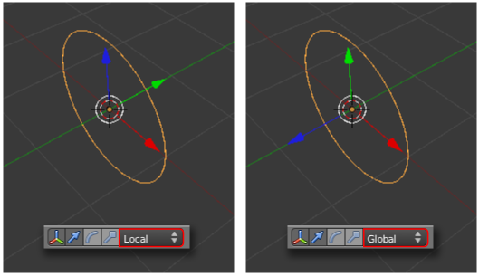
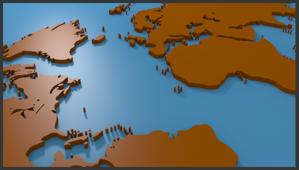
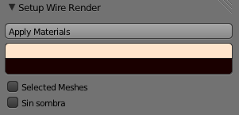
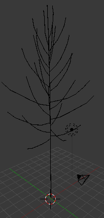
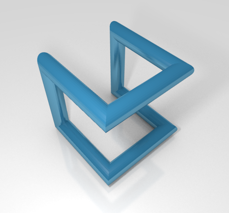
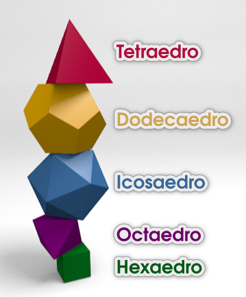

Actividades
1- Verifica los ejes
- Comprueba cómo si el giro de 90º inicial lo haces desde Modo Objeto
 la orientación de los ejes Locales y los Globales no coinciden. Usa para ello el desplegable de la fila de iconos de Vista 3D que se muestra en esta imagen (no olvides nunca volver a dejarlo en Global).
la orientación de los ejes Locales y los Globales no coinciden. Usa para ello el desplegable de la fila de iconos de Vista 3D que se muestra en esta imagen (no olvides nunca volver a dejarlo en Global).

- Adquiere destreza para controlar cómo debe estar colocado el objeto para poder cambiar el eje de giro en el modificador Rosca.
3- Profundiza en el SVG
- Consulta estos artículos de interés sobre el formato SVG:
- Scalable Vector Graphic en W3C (Word Wide Web Consortium). En Inglés.
- Busca gráficos en SVG que puedan servirte y practica la importación en Blender.
- Usa el SVG del mapa del mundo con el que aprendiste para obtener vistas poco habituales, como por ejemplo Europa vista desde América.

4- Busca en internet extensiones y pruébalas
Usa en un buscador palabras como "blender addon", "blender add on", "blender script"...
Las palabras "blender wire material addon liero" (liero es el autor) te llevarán a la extensión mencionada en el apartado Instalación.
Aparece en el cuadro Herramientas ("T").
5- Extensiones alucinantes
No dejes de echarle un vistazo a la extensión Sapling dentro de la sección Add Curve. Una vez activada se crea el menú Añadir/Curva/Add Tree que sacará algo así.
Nada más sacarlo tienes un montón de opciones en Herramientas ("T") para comenzar a jugar. Que no te engañen las apariencias... se pueden poner hojas, elegir tipo de copa, editar todo tipo de comportamientos para las ramas. Comienza, eso sí, por activar la opción biselado para que gane tridimensionalidad.
Una advertencia: consume muchos recursos. Cuidado con aumentar los parámetros sin pensar o el ordenador se quedará sin RAM.
6- "Rehacer malla" en mallas procedentes de SVGs
Práctica el modificador Rehacer malla con los trabajos que vas haciendo derivados de una curva SVG convertida en malla y comprueba cómo se comporta la edición de añadir bucles de lados.
7- "Adherir elemento" con "Pipe joints"
¿Te atreves, con estas dos utilidades, a crear una composición como esta asegurando la precisión?.
8- Trabaja con "Regular solids"
Elabora una composición con los cinco poliedros regulares. Esta imagen puede servirte de inspiración.
